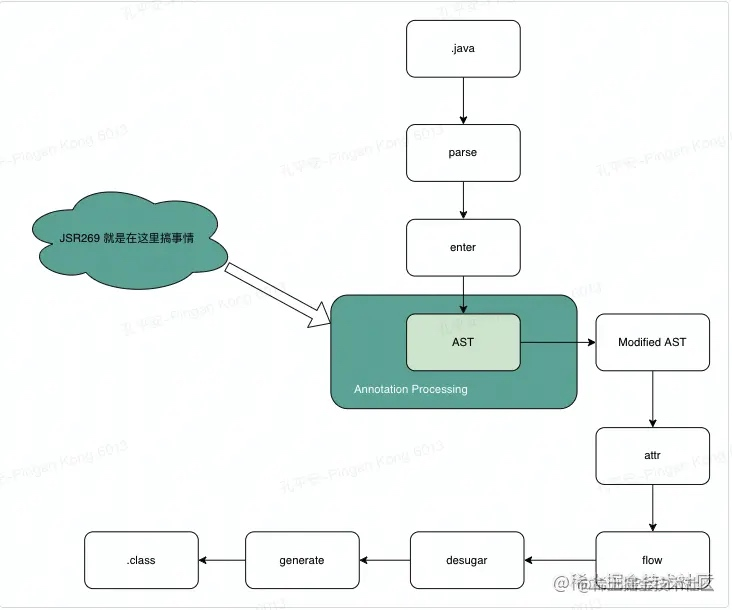

KAPT和APT其实就是注解处理，在Java编程语言中，Annotation Processing Tool ，在java1.5版本中引入了注解，但是仅支持在运行期处理注解，所以对于开发者来讲能用的场景还是比较单一的，在JDK 1.6中实现了JSR-269规范JSR-269：Pluggable Annotations Processing API（插入式注解处理API）。提供了一组插入式注解处理器的标准API在编译期间对注解进行处理。我们可以把它看做是一组编译器的插件，在这些插件里面，可以读取、修改、添加抽象语法树中的任意元素。如果这些插件在处理注解期间对语法树进行了修改，编译器将回到解析及填充符号表的过程重新处理，直到所有插入式注解处理器都没有再对语法树进行修改为止，每一次循环称为一个Round，也就是第一张图中的回环过程。对于Android开发来讲也可以利用此技术做一些重复工作。
再来看下JSR269是在Java编译的那个阶段使用：

通过简单的对Java编译对JSR269规范的了解，我们就可以做一些自己想做的操作
抽象语法树操作API
Names
Names类提供了访问标识符Name的方法，它最常用的方法是fromString，用来从一个字符串中获取Name对象，此方法声明如下：
public Name fromString(String s) {
return table.fromString(s);
}
JCTree
JCTree是语法树元素的基类，包含一个重要的字段pos，该字段用于指明当前语法树节点（JCTree）在语法树中的位置，因此我们不能直接用new关键字来创建语法树节点，即使创建了也没有意义。此外，结合访问者模式，将数据结构与数据的处理进行解耦.部分源码如下所示
public abstract class JCTree implements Tree, Cloneable, DiagnosticPosition {
public int pos = -1;
public abstract void accept(JCTree.Visitor visitor);
}
我们可以看到JCTree是一个抽象类，这里重点介绍几个JCTree的子类：
- JCStatement：声明语法树节点，常见的子类如下
- JCBlock：
语句块语法树节点 - JCReturn：
return语句语法树节点 - JCClassDecl：
类定义语法树节点 - JCVariableDecl：
字段/变量定义语法树节点
- JCBlock：
- JCMethodDecl：
方法定义语法树节点 - JCModifiers：
访问标志语法树节点 - JCExpression：表达式语法树节点，常见的子类如下
- JCAssign：
赋值语句语法树节点 - JCIdent：
标识符语法树节点，可以是变量，类型，关键字等等
- JCAssign：
TreeMarker
TreeMaker用于创建一系列的语法树节点，我们上面说了创建JCTree不能直接使用new关键字来创建，所以Java为我们提供了一个工具，就是TreeMaker，它会在创建时为我们创建的JCTree对象设置pos字段，所以必须使用上下文相关的TreeMaker对象来创建语法树节点。
具体的API介绍可以参照，TreeMakerAPI 重点介绍如下方法
TreeMaker.Modifiers
方法用于创建访问标志语法 树 节点（JCModifiers）
public JCModifiers Modifiers(long flags) {
return Modifiers(flags, List.nil());
}
public JCModifiers Modifiers(long flags,List<JCAnnotation> annotations) {
JCModifiers tree = new JCModifiers(flags, annotations);
boolean noFlags = (flags & (Flags.ModifierFlags | Flags.ANNOTATION)) == 0;
tree.pos = (noFlags && annotations.isEmpty()) ? Position.NOPOS : pos;
return tree;
}
其中参数flag表示访问标志，annotations表示注解列表。
flag可以使用枚举类com.sun.tools.javac.code.Flags来表示，例如要表示public static final可以这样用：
treeMaker.Modifiers(Flags.PUBLIC + Flags.STATIC + Flags.FINAL);
TreeMaker.ClassDef
TreeMaker.ClassDef用于创建类定义语法树节点（JCClassDecl）,源码如下：
public JCClassDecl ClassDef(JCModifiers mods,Name name,List<JCTypeParameter> typarams,JCExpression extending,List<JCExpression> implementing,List<JCTree> defs) {
JCClassDecl tree = new JCClassDecl(mods,name,typarams,extending,implementing,defs,null);
tree.pos = pos;
return tree;
}
参数说明：
mods：访问标志，可以通过方法TreeMaker.Modifiers来创建name：类名typarams：泛型参数列表extending：父类implementing：实现的接口defs：类定义的详细语句，包括字段、方法的定义等等
TreeMaker.MethodDef
TreeMaker.MethodDef用于创建方法定义语法树节点（JCMethodDecl），源码如下：
public JCMethodDecl MethodDef(JCModifiers mods,Name name,JCExpression restype,List<JCTypeParameter> typarams,List<JCVariableDecl> params,List<JCExpression> thrown,JCBlock body,JCExpression defaultValue) {
JCMethodDecl tree = new JCMethodDecl(mods,name,restype,typarams,params,thrown,body,defaultValue,null);
tree.pos = pos;
return tree;
}
public JCMethodDecl MethodDef(MethodSymbol m,Type mtype,JCBlock body) {
return (JCMethodDecl)
new JCMethodDecl(Modifiers(m.flags(), Annotations(m.getAnnotationMirrors())),m.name,Type(mtype.getReturnType()),TypeParams(mtype.getTypeArguments()),Params(mtype.getParameterTypes(), m),Types(mtype.getThrownTypes()),body,null,m).setPos(pos).setType(mtype);
}
参数说明：
mods：访问标志name：参数名称vartype：类型init：初始化语句v：变量符号
常用类介绍
AnnotationMirror
AnnotationMirror用于表示一个注解，其中提供了两个方法分别用于获取注解类型和注解的值，如下所示。
public interface AnnotationMirror {
/**
* 获取此注解的ElementType
*/
DeclaredType getAnnotationType();
/**
* 获取此注解的所有Element的值
*/
Map<? extends ExecutableElement, ? extends AnnotationValue> getElementValues();
}
Element
源代码的每一个部分都是一个特定类型的Element，也就是说Element代表源文件中的元素，例如包、类、字段、方法等。
Element类是一个接口，由Element衍生出来的扩展类共有五种，分别是：
PackageElement：表示一个包程序元素，提供对有关包及成员的信息的访问。TypeElement：表示一个类或者接口程序元素，提供对有关类型及其成员信息的访问。TypeParameterElement：表示一个泛型元素。VariableElement：表示一个字段、enum常量、方法或者构造方法的参数、局部变量或异常参数。ExecuteableElement：表示某个类或者接口的方法、构造方法或初始化程序（静态或者实例）。